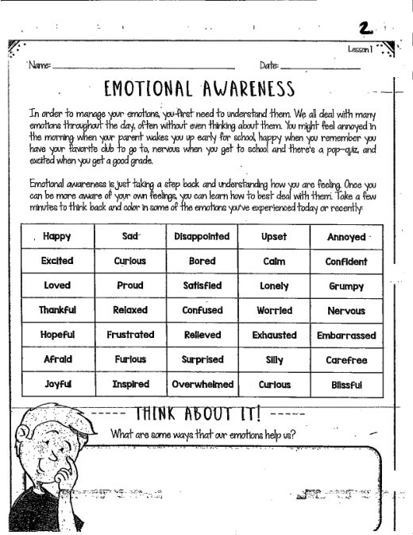
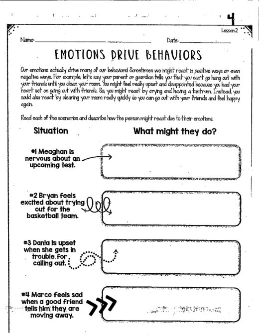
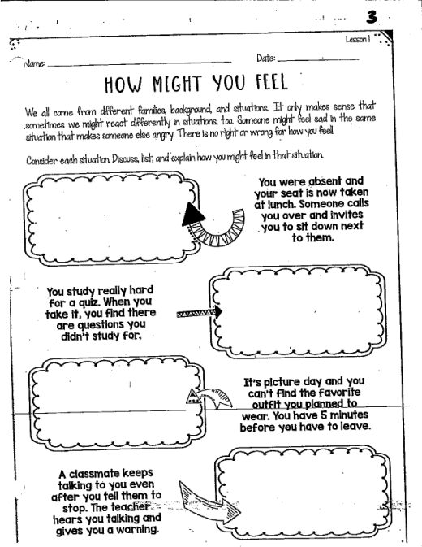
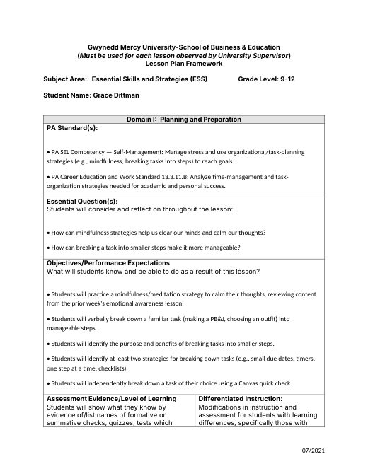
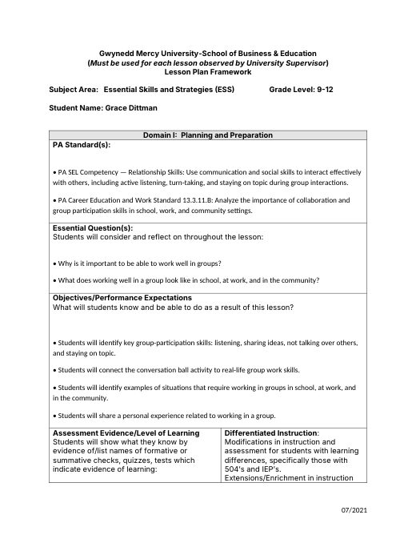
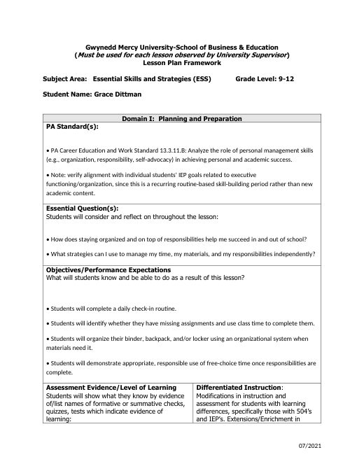
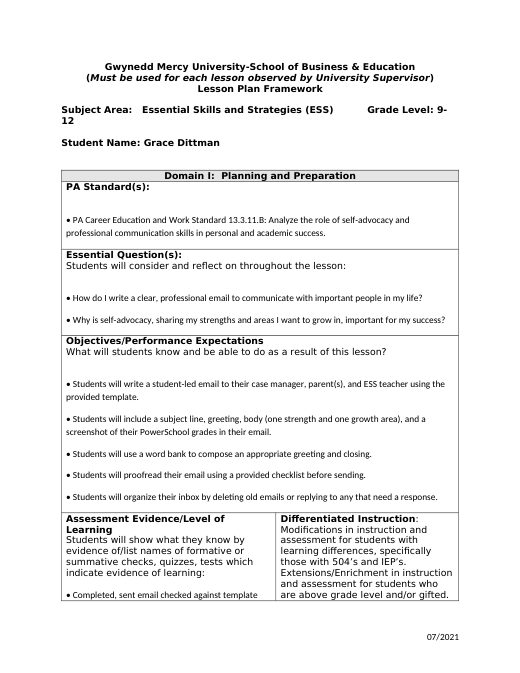

Grace Dittman
Student Teaching Portfolio
Block 2 Math
Block 3 Math
ESS
Lesson Plans
Résumé
Search
Home
›
ESS
›
weeks 4+5
weeks 4+5
← weeks 1+2+3
weeks 6+7 →
Activities
· 3 files

Emotional Awareness
Emotional Awareness.pdf

Emotions Drive Behaviors
Emotions Drive Behaviors.pdf

How Might You Feel?
How Might You Feel.pdf
Lesson Plans
· 8 files
📁 Breaking Down Tasks 9
1 file
📁 Emotional Awareness 9
1 file
📁 ESS 9
1 file
📁 Working in Groups 9
1 file

Mindfulness & Breaking Down Tasks
ESS9-28LessonPlan.docx

Working in Groups
ESS 9-23 & 9-30LessonPlan.docx

ESSFridayRoutineLessonPlan
ESSFridayRoutineLessonPlan.docx

ESSThursdayLessonPlan
ESSThursdayLessonPlan.docx
Slides
· 1 file
📁 Canva slides ESS week 4
1 file
← weeks 1+2+3
weeks 6+7 →